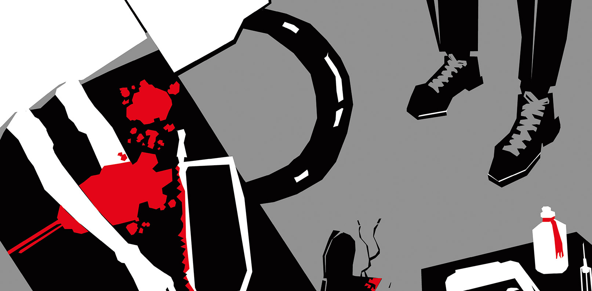
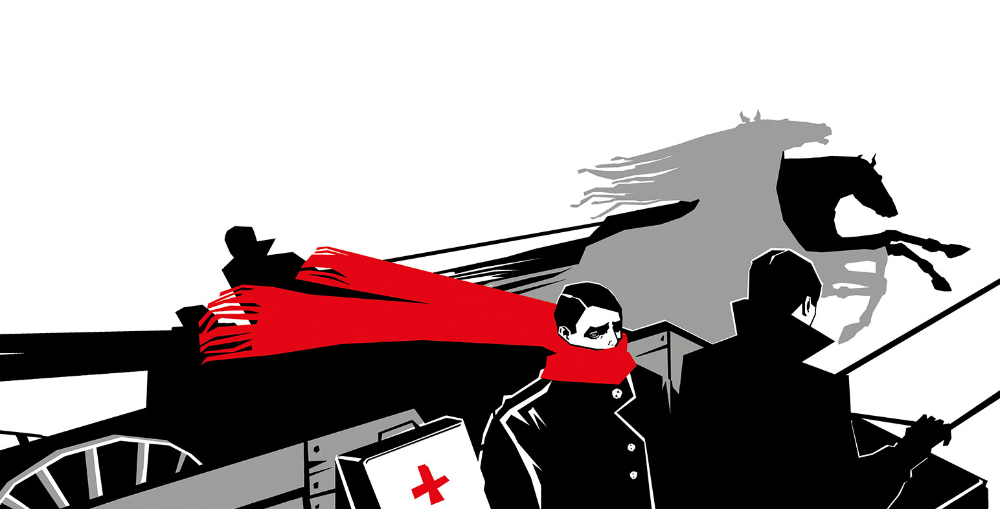
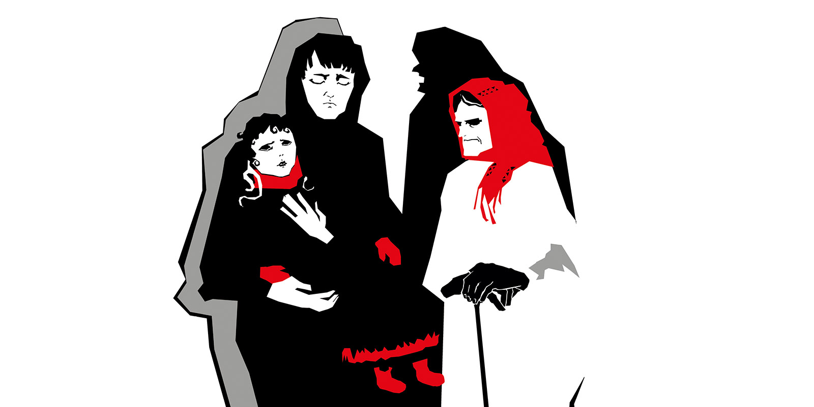
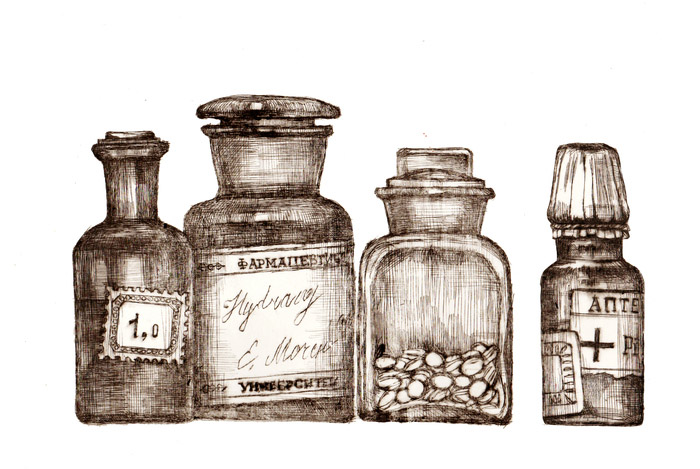
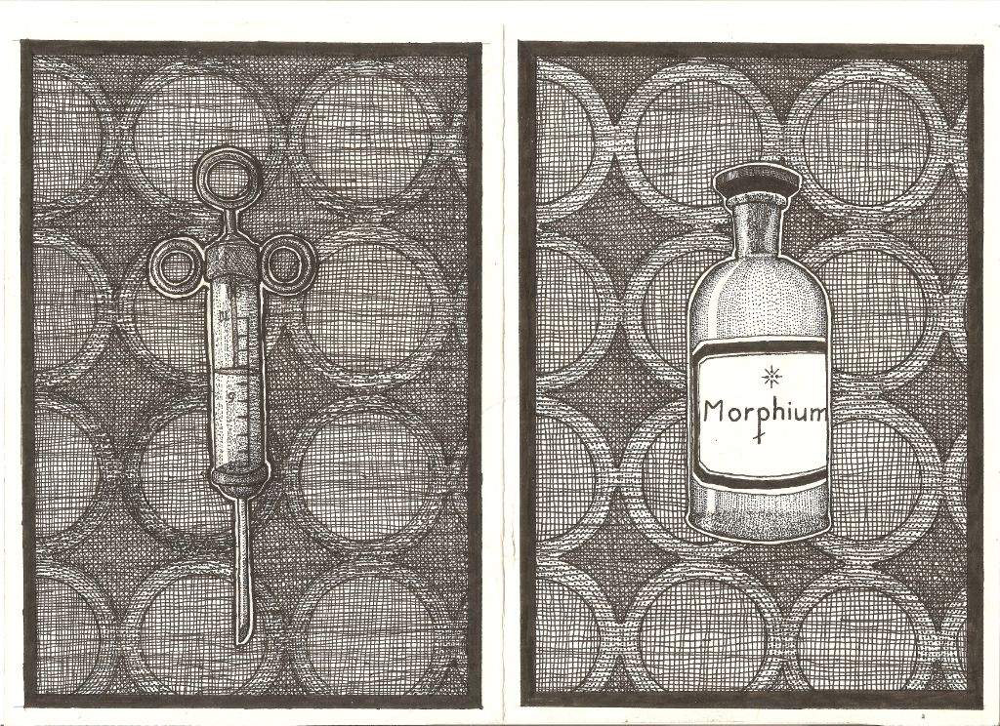
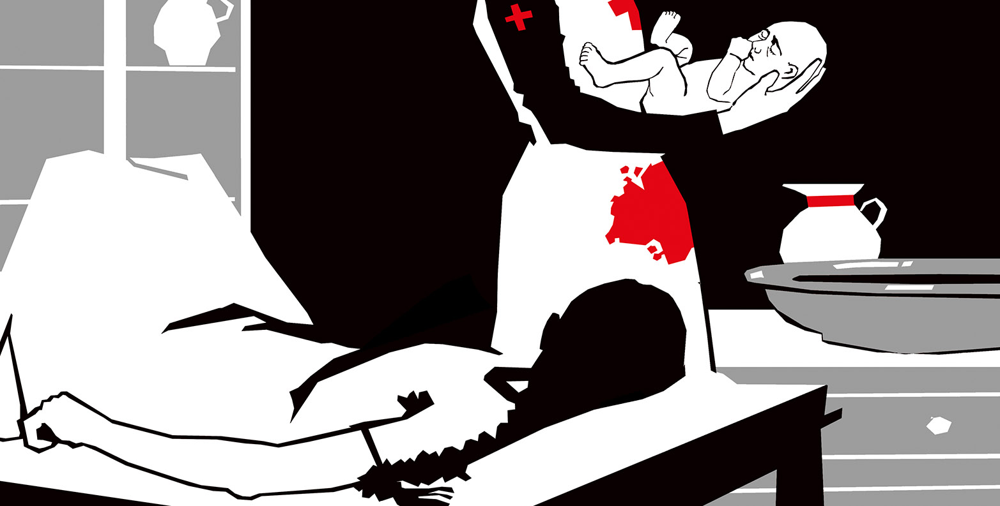
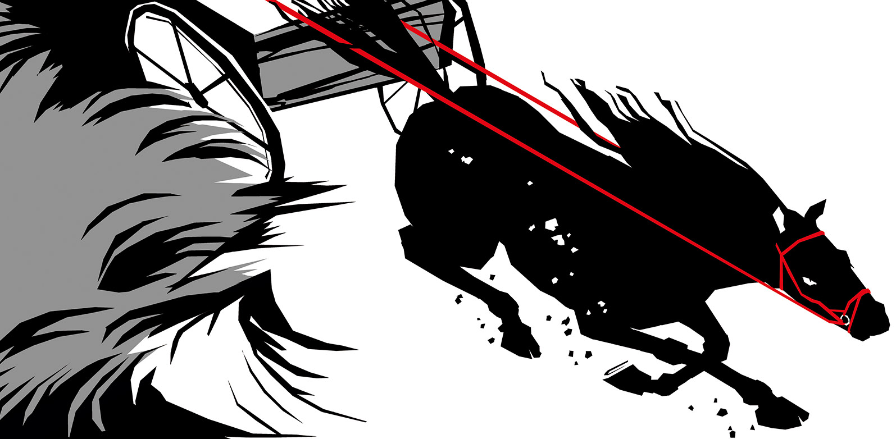
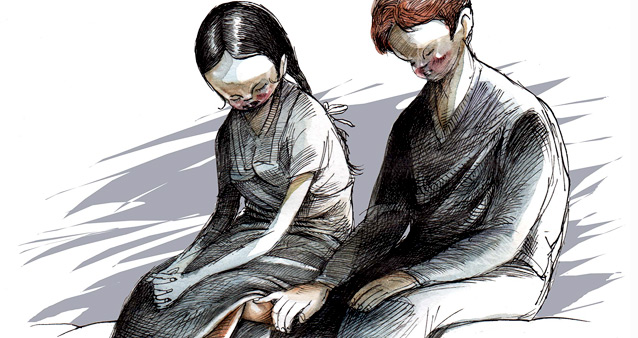
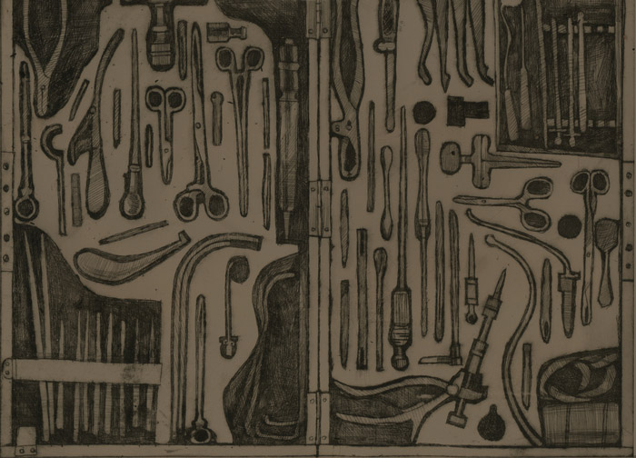

Краткое изложение
Бомгард, как только прибыл на новое место, тотчас же столкнулся с необходимостью провести ампутацию. К счастью, операция заканчивается успешно, старый фельдшер хвалит его и добавляет, что, судя по всему, у врача есть большой опыт по этой части. Бомгард отвечает с дрожью, что уже сделал две, и упрекает сам себя за ложь.
Доктор отправляется в отдаленную деревню по неотложному вызову и попадает в буран. Авторская мысль в рассказе проста: ему не позволяет отказать больному врачебная этика, несмотря ни на какие препятствия, стоящие на пути, и чего бы это ни стоило.
Девочка на последней стадии дифтерии попадает на прием к доктору. Бомгард, взбешенный невежеством бабушки и матери ребенка, производит трахеотомию и вставляет в горло на время стальную трубку для того, чтобы пациентка не скончалась от удушья. Эта история заканчивается анекдотом: со всех окрестных деревень приезжают посмотреть на спасенную девочку крестьяне, уверенные в том, что доктор зашил ей в горло стальную трубку.
Булгаков "Записки юного врача" продолжает следующим рассказом, в котором анекдотически описывается невежество простых крестьян. Речь в нем идет о больном малярией мельнике. Курс хинина, прописанный ему и рассчитанный на неделю, он решает принять за раз, поскольку не хочет долго ждать своего выздоровления. Вот о чем поведал нам в данном рассказе Булгаков.
"Записки юного врача" продолжаются произведением "Морфий". Этот рассказ - самый мрачный из всех включенных в сборник. Он представляет собой фактически монолог одного наркомана-морфиниста, покончившего с собой коллеги доктора Бомгарда. Булгакову была очень знакома эта тема, поскольку он сам прошел через муки зависимости от данного вещества, но нашел в себе силы победить болезнь, в отличие от Полякова, этого несчастного доктора. На нескольких страницах пронзительной истории, которую создал Михаил Булгаков ("Записки юного врача"), показан ужас наркомании и неизбежного финала ее - нравственной деградации, потери друзей и близких, распада личности.
Бомград здесь вынужден принимать тяжелые роды. Не обладая в этом никаким опытом, он лихорадочно вчитывается перед операцией в пособие, но в конце концов доктору приходится положиться лишь на свою профессиональную интуицию. Завершив операцию благополучно, он вновь читает книгу и замечает, что все неясные ранее места теперь ему совершенно понятны. Книжный опыт подтвердился практическим, отмечает Булгаков. Книга "Записки юного врача" продолжается следующим рассказом.
Бомгард в данном произведении подводит итоги первого года практики в Мурьевской больнице, замечает без удивления, что сильно изменился и внешне, и внутренне, вспоминает различные курьезные случаи. Теперь, благодаря опыту, он смотрит без страха на новый случай, но от излишней гордости медика спасают те из них, в которых чрезмерная образованность мешает ему усмотреть очевидное и простое (например, случай с "пропавшим" глазом). Молодой 23-летний доктор отмечает: каждый год будет приносить с собой подобные сюрпризы, а учеба не прекратится никогда.
В этом рассказе врач сталкивается с очагом заболеваемости сифилисом и ясно понимает, что эта страшная болезнь имеет социальный характер, из-за чего с ней справиться становится труднее, чем с любым другим недугом. Бомгард начинает упорную и долгую борьбу с сифилисом, но в конце концов должен признать, что для успешного лечения требуется система, которая была бы способна переломить страх перед этой болезнью у крестьян.
Заканчивает цикл, который создал М. Булгаков ("Записки юного врача"), рассказ "Я убил". Бомгард поведал в нем историю Яшвина, своего коллеги, представившегося как единственный хирург с пистолетом, а не со скальпелем. Рассказ Яшвина происходит в Киеве в 1919 году. Врача насильно забирают петлюровцы и устраивают полковым доктором в подчинении полковника Лещенко. Наблюдая пытки, убийства, расправы и зверские нравы периода Гражданской войны, Яшвин делает в итоге свой нелегкий нравственный выбор. Общечеловеческие ценности при этом ставятся выше профессиональной врачебной этики. Это непростая коллизия, учитывая еще и то, что она возникает перед представителем столь гуманной профессии.
